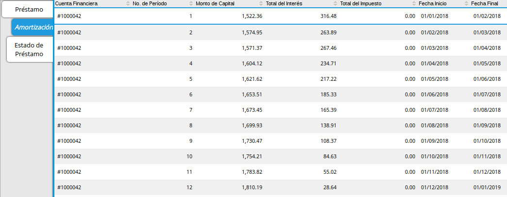

Préstamo¶
El préstamo en ADempiere pueden ser generados de dos formas, en la definición del proceso anterior se explicó cómo generar el préstamo desde la simulación, ahora aprenderá cómo crear un préstamo en la ventana de préstamo.
Vaya a la ventana de Préstamo(Adjunto Imagen)
Imagen 1. Menú de Préstamo

A continuación se desplegará la siguiente ventana (Adjunto Imagen)
Imagen 2. Ventana de Préstamo

Proceda a crear el préstamo con las siguientes características puntuales:
Tipo de Documento: Seleccione el tipo de documento previamente configurado (Vea Configuraciones Esenciales para el Proceso de Préstamo).
Tipo de Acuerdo: Seleccione el tipo de acuerdo de su preferencia.
Socio de Negocio: Indique el socio del negocio solicitante previamente configurado (Vea Configuraciones Esenciales para el Proceso de Préstamo).
Producto Financiero: Seleccione el producto financiero o préstamo a aplicar previamente configurado (Vea Configuración de Producto Financiero (Préstamo)), este parámetro posee una validación, los préstamos disponibles en esta lista dependerá de el grupo de socio de negocio al cual pertenezca el socio de negocio seleccionado y la configuración del producto financiero en aplicación de producto.
Válido Desde: Indique la fecha de inicio del préstamo.
Imagen 3. Válido Desde
Guarde el registro
Imagen 4. Botón Guardar

Al guardar el registro el sistema crea un registro como cuenta de préstamo.
Imagen 5. Guardar Registro

Proceda a crear el préstamo con las siguientes características puntuales:
Monto de Capital: Indique el monto del préstamo solicitado.
Frecuencia de Pago: ADempiere establece por herencia la frecuencia configurada en el producto financiero seleccionado, sin embargo puede modificarlo.
Fecha Inicio: Indique la fecha de inicio del préstamo.
Fecha Final: ADempiere calcula y establece la fecha basada en la frecuencia y la fecha de inicio, sin embargo puede modificarlo.
Nro de Cuotas: ADempiere establece por herencia el Nro de cuotas basadas en la cantidad mínima de cuotas configurada en el producto financiero seleccionado, sin embargo puede modificarlo.
Moneda: ADempiere establece por herencia la moneda basada en la configuración del producto financiero seleccionado, sin embargo puede modificarlo.
Tasa Financiera: ADempiere establece por herencia la tasa financiera basadas en la configuración del producto financiero seleccionado, no puede ser modificado.
Guarde el registro
Imagen 6. Botón Guardar
Después de Guardar el Préstamo
Imagen 7. Después de Guardar el Préstamo

Complete el registro
Imagen 8. Completar Préstamo
Imagen 9. Ventana Completar Préstamo

A continuación se desplegará el siguiente dialogo
Imagen 10. Diálogo de Completar Préstamo

Si desea completar el préstamo seleccione la opción ok  , caso contrario seleccione la opción cancelar
, caso contrario seleccione la opción cancelar 
Amortización¶
Vaya a la pestaña Amortización (Adjunto Imagen)

Imagen 11. Amortización de Préstamo
Los registros de esta pestaña son autogenerados al completar el préstamo en la ventana de préstamo o generando el préstamo desde el simulador.
Consulta de Préstamo¶
Si el préstamo fue generado desde el simulador o directamente creado en la ventana podrá consultarlo en la ventana Préstamo. Una vez en la ventana de Préstamo busque el registro desde la opción Encontrar Registro ubicada en la barra de herramientas.
Imagen 12. Búsqueda de Préstamo

A continuación se desplegará el siguiente diálogo.
Imagen 13. Díalogo de Búsqueda de Préstamo

Ingrese el número del préstamo generado en la simulación si fue generado desde la simulación.